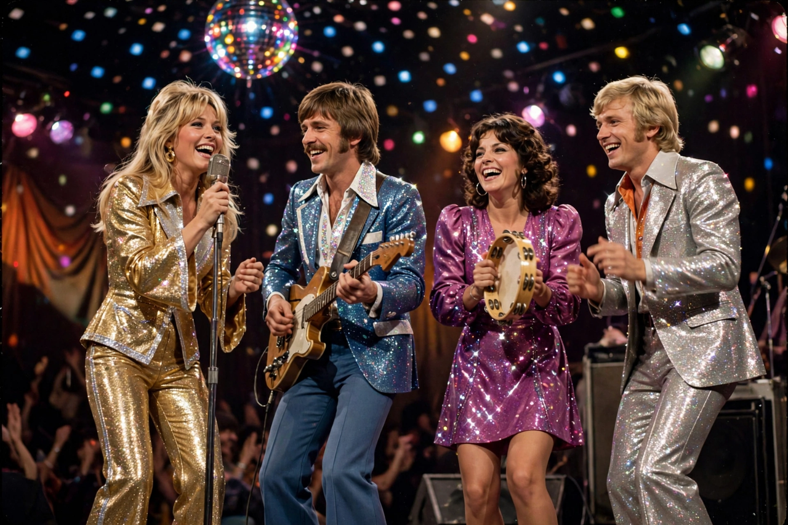

Dancing Queen
| "Dancing Queen" | |
|---|---|
 | |
| Artist | ABBA |
| Album | Arrival |
| Released | 16 August 1976 |
| Genre | Disco, Europop |
| Length | 3:51 |
| Songwriters | Benny Andersson, Björn Ulvaeus, Stig Anderson |
| Producer | Benny Andersson, Björn Ulvaeus |
"Dancing Queen" is a song by the Swedish group ABBA, released as the lead single from their fourth studio album, Arrival (1976). Written by Benny Andersson, Björn Ulvaeus and Stig Anderson, it was first performed in June 1976 at an all-star gala in Stockholm on the eve of the wedding of King Carl XVI Gustaf and Silvia Sommerlath. The song became ABBA's only number one on the US Billboard Hot 100 and topped charts in more than a dozen countries; it is widely regarded as one of the greatest pop and disco recordings ever made.
Composition
Andersson and Ulvaeus began writing the song in August 1975, inspired by George McCrae's disco hit "Rock Your Baby" and the drumming on Dr. John's Gumbo album. The groove is built on a distinctive descending piano glissando and a "wall of sound" of layered vocals by Agnetha Fältskog and Anni-Frid Lyngstad. The lyrics, added by manager Stig Anderson, celebrate a carefree seventeen-year-old girl who is "young and sweet" and lives for the dance floor — a portrait of youthful joy that helped the song transcend the disco era.
Reception and legacy
The single reached number one in Australia, Belgium, Brazil, Canada, Denmark, Germany, Ireland, Mexico, the Netherlands, New Zealand, Norway, South Africa, Sweden, the United Kingdom and the United States, among others. In 2015 it was inducted into the Grammy Hall of Fame. It has been a fixture of wedding parties, Pride celebrations and karaoke nights for decades, and its streams resurged with the success of the stage musical and films of Mamma Mia!, in which it is a centrepiece. In 2021 ABBA performed the song in their Voyage virtual-concert residency in London.
Cover versions
The song has been covered by numerous artists, including A-Teens — whose version was promoted on Radio Disney — and Cher, who recorded it for her ABBA tribute album Dancing Queen (2018). It remains ABBA's signature song and one of the best-selling singles of the 1970s.